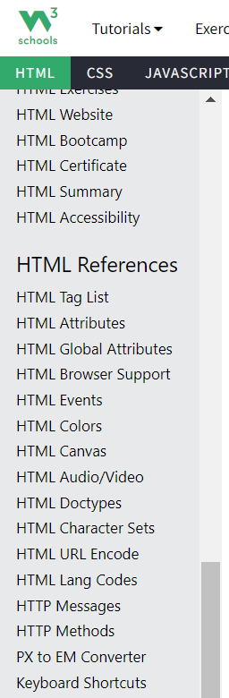
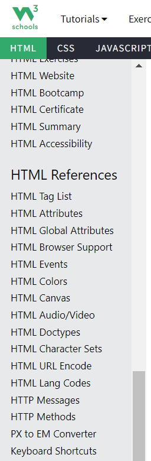

Starting out with C++
When applying for this position at Siemens, I knew that my software skills might not be as developed as they needed to be, even with an engineering background. I decided to do my best to develop these skills to not only serve me well in the Genesis program, but to help me thrive at the company itself. I had heard good things about using W3Schools to learn new programming languages, so I figured that might be a good place to start.
I found it very helpful that the platform had interactive practice exercises that went along with each topic section. I am definitely more of a hands-on learner, so I found this feature to help me understand more about why I was using the respective syntax, compared to just memorizing what I needed to type to get the code to run without errors.


After completing the course in W3Schools, I figured the best way to apply what I learned and truly know how to code in C++ was to solve programming challenges. I was able to create a HackerRank account and do exactly this! I found HackerRank to be the perfect stepping stone for me since it provides you with subdomains of important challenges available. Each prompt also provides key details for what you will need to know to solve these problems.
Now, I definitely did not just automatically know how to solve these challenges based on the lessons I covered in W3Schools. However, I found that I had understood most of the basics of the language, and in combination with the details provided within the prompt, I was able to figure out the majority of the required code. Below I have included the topics of the challenges that I have completed.


As mentioned, utilizing the above resources was helpful for getting me into the position to figure out most of the code that I needed. When I was in situations where I felt stuck, or ran into errors that I did not understand, I made sure to utilize the textbook below. I had downloaded this book as a reference guide for my C++ learning journey, and it has been a huge help along the way. Additionally, I would watch YouTube videos or do a quick Google search for how to fix the problems that I was running into with my code.

Overall, I would say that learning C++ was challenging, yet very rewarding. There were times when I thought I may never figure out the solution, but with perseverance, I was eventually able to reach my goals! I have currently reached gold status in HackerRank and have solved nearly half of the provided programming challenges. I am constantly working to solve more to improve my skills even further!
Learning HTML to build this website!
Since I found W3Schools to be super helpful when learning C++, I figured it would be a great tool when learning HTML. As I was continuing to complete HackerRank challenges in C++, I realized about a week ago that improving my software skills goes beyond getting better at just one programming language. Therefore, since I had never built a website from scratch before, I figured what better time than now to learn! That is what inspired the idea to create this webpage to highlight the progress that I made over break.
I started out by covering all of the topics included in the course, and worked on building this website as I went! I also utilized the help of other resources and YouTube videos and other websites on the internet when I had questions for including specific features on my webpage that were not included in the W3Schools course. I found that I learned the most through trial and error when building this page.


 

I feel that these skills will be incredibly useful moving forward and will serve me well when applying software knowledge in the future.
Updated Resume
Below is the most up to date version of my resume, including C++ and HTML, the newest software languages I have learned.
Feel free to navigate to another page to learn more!